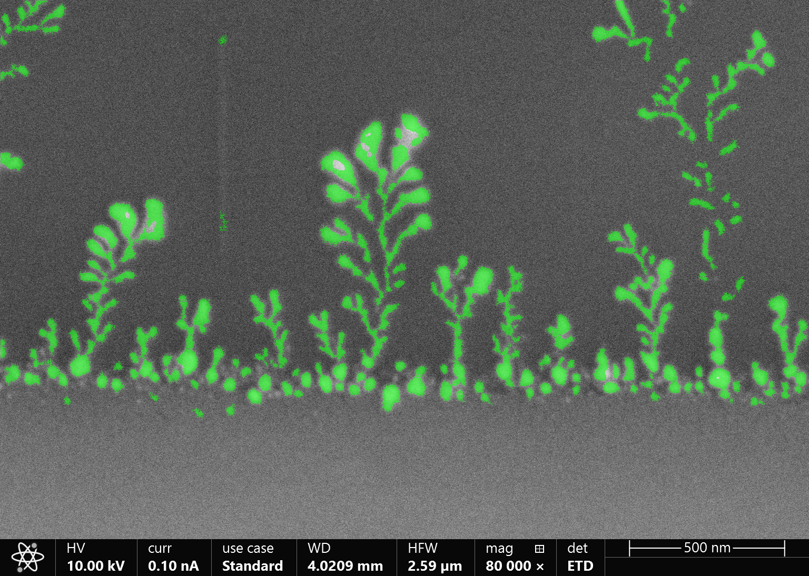
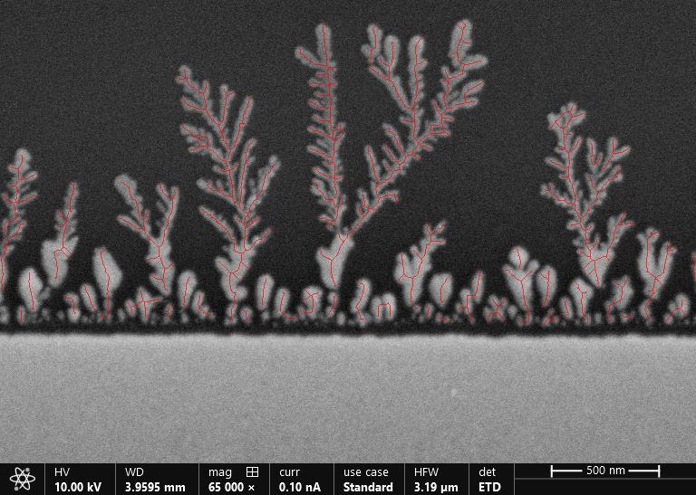
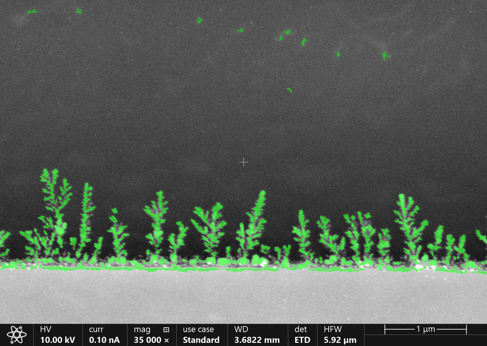
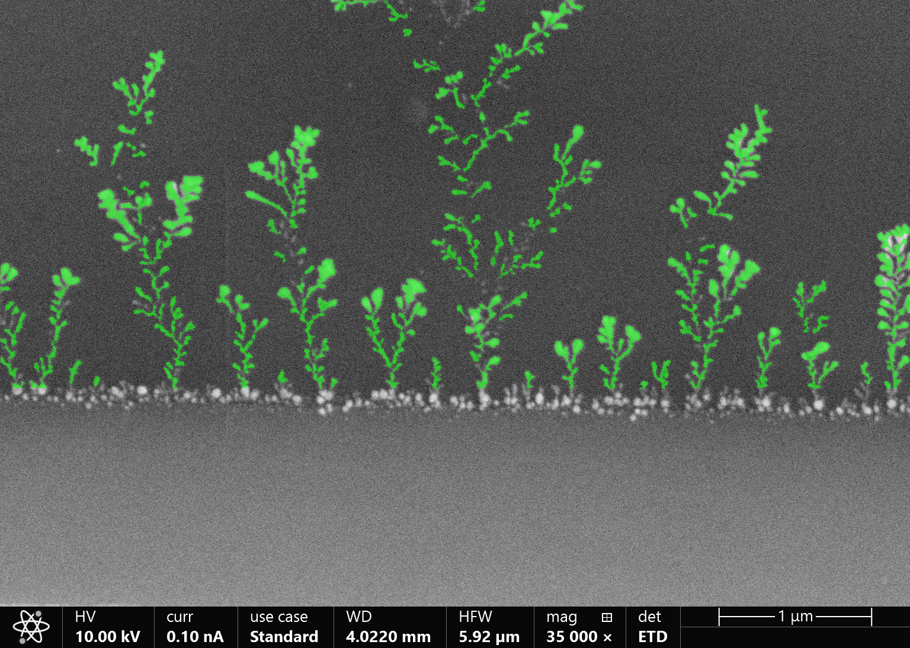
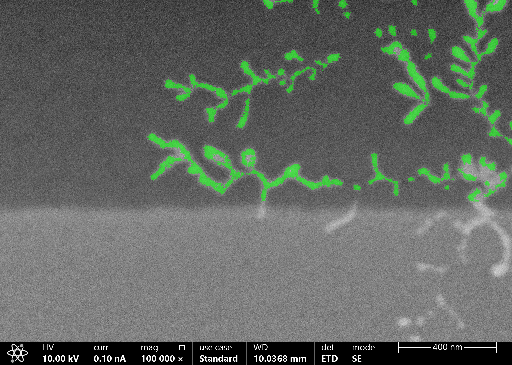
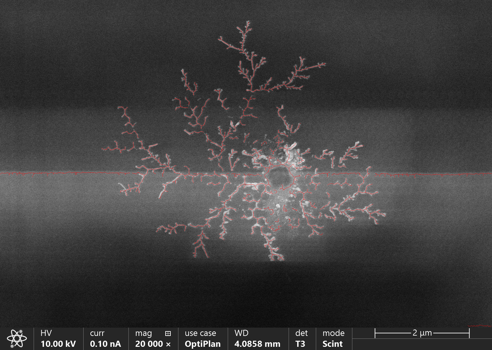
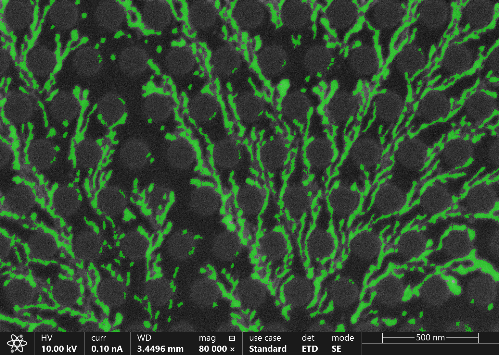
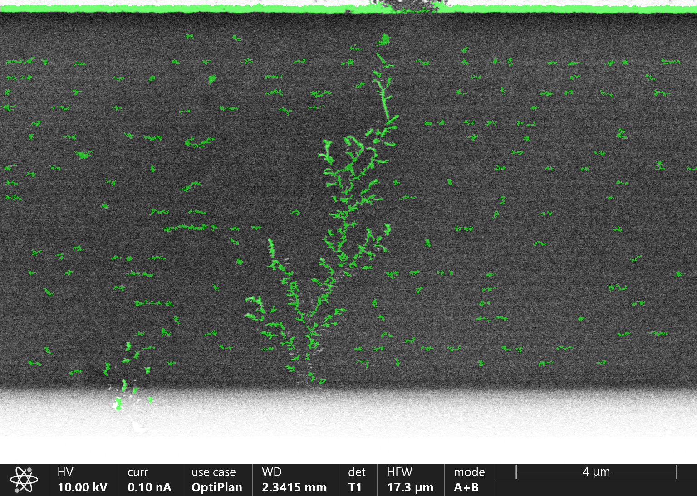
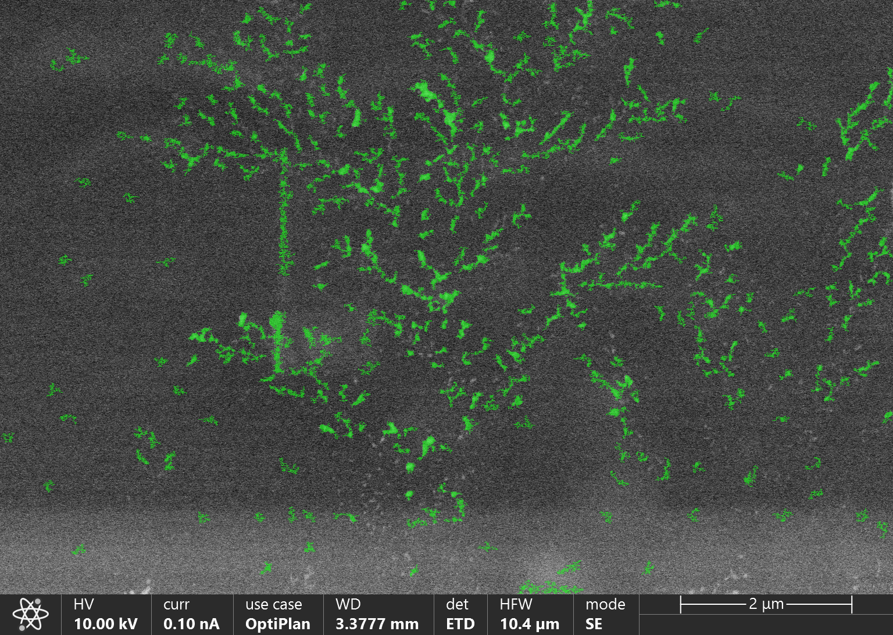

סגמנטציה של דנדריטים בתמונות SEM
גרסה זו מיועדת להדפסה או ל-Print to PDF ישירות מהדפדפן.
1. תקציר
בפרויקט זה פותחה מערכת לסגמנטציה אוטומטית של דנדריטים בתמונות SEM. מטרת המערכת היא להפריד בין מבנה הדנדריט לבין הרקע, להסיר ארטיפקטים אופייניים של המיקרוסקופ, ולהפיק גם שלד חד-פיקסלי לצורך ניתוח מבני עתידי.
הפתרון המרכזי שמומש מבוסס על pipeline קלאסי לעיבוד תמונה, הכולל נרמול היסטוגרמה, שיפור ניגודיות מקומי באמצעות CLAHE, סינון bilateral משמר קצוות, סגמנטציה באמצעות adaptive thresholding, ניקוי מורפולוגי, הסרת אזורי רקע בעייתיים, הפרדת ענפים נוגעים באמצעות distance transform ו-Watershed, ולבסוף Skeletonization. בנוסף נבנה GUI אינטראקטיבי לצורך כיוונון פרמטרים, ניתוח שלבים והשוואה בין קונפיגורציות שונות.
ממצאי הפרויקט מראים כי ה-pipeline הקלאסי מספק תוצאות חזקות במיוחד בקבוצת התמונות הקלות, וכן בחלק מן התמונות הקשות. ברוב מקרי הכמעט-הצלחה הכשל איננו כשל יסודי של הסגמנטציה, אלא בעיית ניקוי מקומית, בעיקר סביב baseline cut או top band removal. בהתאם לכך, הדוח מתמקד בדוגמאות המייצגות ביותר, לצד מספר מקרי גבול שמסבירים היכן נדרש שיפור נוסף.
2. מתודולוגיה
2.1 הגדרת הבעיה
דנדריטים הם מבנים מתכתיים מיקרוסקופיים בעלי גיאומטריה מסועפת, הצומחים על פני האנודה במהלך מחזורי טעינה ופריקה של סוללות ליתיום. צמיחתם עלולה לגרום לקצר פנימי ולכן יש חשיבות גבוהה לזיהויים ולמדידתם מתוך תמונות SEM.
האתגר המרכזי בסגמנטציה של דנדריטים נובע מכך שתמונות SEM כוללות רעש, אי-אחידות בתאורה, אזורי רוויה, קווי רקע בוהקים ולעיתים גם טקסטורות מחזוריות הדומות חזותית לענפים דקים. מסיבה זו, שיטות סף גלובליות פשוטות אינן מספקות ברוב המקרים.
2.2 ה-pipeline הקלאסי
- קדם-עיבוד: ניקוי טקסט ו-scale bar, נרמול היסטוגרמה, CLAHE וסינון bilateral.
- סגמנטציה: שימוש ב-adaptive thresholding, עם אפשרות גיבוי ל-Otsu.
- ניקוי לאחר סגמנטציה: reconstruction מורפולוגי,
baseline cut, הסרת substrate, הסרת top band, הסרת רעשי שוליים והסרת רכיבים קטנים. - עיבוד מבני: הפרדת ענפים נוגעים באמצעות distance transform ו-Watershed, ולאחר מכן Skeletonization.
2.3 ה-GUI ככלי ניתוח וכיוונון
לצורך כיוונון המערכת נבנה GUI אינטראקטיבי המציג את כל שלבי ה-pipeline, החל מ-01_original ועד 10_skeleton. הממשק שימש ככלי מרכזי להבנת מקרי שגיאה, ובפרט לזיהוי מדויק של פגיעה הנגרמת מ-baseline cut אגרסיבי מדי או מ-top band removal שאינו מספק.
2.4 ה-pipeline המבוסס Deep Learning
לפי דרישות הפרויקט, יש להתייחס גם ל-pipeline מבוסס Deep Learning. במסגרת הפרויקט הוכנה תשתית ל-YOLO-Seg, כולל מבנה דאטהסט, קבצי תיוג וקבצי משקלים. תצורת האימון שהוכנה מבוססת על yolo11n-seg.pt עם epochs=100, imgsz=640, batch=8, patience=20, freeze=10, lr0=0.001 ו-conf=0.25.
הדאטהסט הקיים בפרויקט קטן מאוד וכולל 7 תמונות אימון, תמונת validation אחת ו-2 תמונות test. לכן, בשלב הנוכחי, ה-pipeline הזה משמש בעיקר כתשתית השוואה עתידית. בריצה הקיימת נצפתה תנודתיות גבוהה במדדי ה-mAP, דבר שמצביע על כך שהדאטהסט קטן מדי להשוואה כמותית יציבה.
2.5 פירוט מלא של ה-pipeline הקלאסי
שלב א: קדם-עיבוד
בשלב הראשון התמונה עוברת ניקוי של פסי metadata ושל טקסט המיקרוסקופ, ולאחר מכן מתבצע נרמול היסטוגרמה לטווח [0,255]. מטרת הנרמול היא לייצר בסיס עקבי בין תמונות בעלות חשיפה שונה. לאחר מכן מופעל CLAHE, שמבצע שיפור ניגודיות מקומי במקום שיפור גלובלי, וכך מאפשר להבליט ענפים חלשים גם כאשר התאורה איננה אחידה.
לאחר שיפור הניגודיות מופעל bilateral filter. בניגוד לטשטוש גאוסי רגיל, bilateral מנסה להחליק רעש בלי למחוק קצוות חזקים. זהו השלב שמקטין grain של SEM אך עדיין שומר על גבולות הדנדריט.
שלב ב: סגמנטציה
בשלב הסגמנטציה מיוצרות שתי מסכות: מסכת adaptive thresholding ומסכת Otsu. לאחר מכן המערכת בודקת איזו מסכה סבירה יותר מבחינת יחס foreground, בעיקר באזור העליון של התמונה. בנוסף מתבצע תיקון polarity אם foreground הופך לרוב הפיקסלים.
שלב ג: ניקוי לאחר סגמנטציה
זהו השלב החשוב ביותר מבחינת יציבות. תחילה מתבצע morphological reconstruction: המסכה נשחקת ל-marker קטן יותר, ואז נבנית מחדש בתוך גבולות המסכה המקורית. לאחר מכן מופעל בלוק הניקוי של שלב 8, שהופרד לתת-שלבים: baseline cut, הסרת substrate, הסרת top band, הסרת edge noise, הסרת ארטיפקטים אופקיים בתחתית, ולבסוף סינון רכיבים קטנים.
ההפרדה הזו היתה קריטית, משום שהיא חשפה שהבעיה בתמונות הקשות לא היתה "רכיבים קטנים" בלבד, אלא אינטראקציה בין מספר צעדי ניקוי שקדמו לכך.
שלב ד: הפרדה ושלד
לאחר ניקוי המסכה מופעל distance transform, ובעזרת Watershed ניתן לפצל ענפים נוגעים. לאחר מכן מתבצע Skeletonization כדי להמיר את המסכה לקווי אמצע חד-פיקסליים. השלד עובר pruning להסרת רכיבים זעירים וקווים אופקיים מלאכותיים, ולאחר מכן הסרת spurs, כלומר שלוחות קצרות שאינן מייצגות ענף אמיתי.
2.6 בחירת פרמטרים ותהליך הניסויים
בחירת הפרמטרים לא בוצעה באופן חד-פעמי, אלא באמצעות תהליך איטרטיבי של ניסויי A/B ב-GUI. בכל ניסוי שונה פרמטר אחד או קבוצה קטנה של פרמטרים, ונבחנה ההשפעה על תמונות Easy ותמונות Hard. בכל מקרה לא הסתפקנו במסכה הסופית בלבד, אלא עברנו שלב-שלב על intermediate outputs כדי לזהות היכן נוצר הרווח והיכן נגרם הנזק.
הניסויים המרכזיים
- סף אדפטיבי:
ADAPTIVE_C = -12נמצא כפרמטר המשמעותי ביותר. כאשרCהוזז לכיוון0, המסכה התרחבה והפכה רועשת; כאשר הוקטן יותר מדי, ענפים דקים נעלמו.ADAPTIVE_BLOCK_SIZE = 67נבחר משום שחלון קטן יותר יצר מסכה עצבנית ומחוררת, ואילו חלון גדול מדי פספס פרטים מקומיים. - ניגודיות ודנויזינג: ערכי CLAHE גבוהים יותר חיזקו רעש והילות סביב קצוות. לכן נבחרו
CLAHE_CLIP_LIMIT = 0.5ו-CLAHE_TILE_SIZE = 8. עבור bilateral filter נמצא כי יותר ממעבר אחד ריכך ענפים דקים, ולכן נבחרBILATERAL_PASSES = 1. - Reconstruction: הגדלת גרעין השחיקה או מספר האיטרציות גרמה לפירוק ענפים חלשים. לכן נבחרו
EROSION_KERNEL_SIZE = 3,EROSION_ITERATIONS = 1, ונוסףRECON_MIN_KEEP_RATIO = 0.72כדי לאפשר fallback. - Baseline ו-substrate: זה היה אזור הניסוי המרכזי.
BASELINE_DETECT_MIN_ROW_RATIO = 0.80ו-BASELINE_DETECT_SEARCH_START_RATIO = 0.60נבחרו כך שהחיפוש יתחיל בחצי התחתון של התמונה אך לא יחתוך מוקדם מדי. אחת התוספות החשובות ביותר היתהSUBSTRATE_MAX_ROWS_ABOVE_BASELINE = 8. - רכיבים קטנים: בעקבות מחיקה של קצות ענפים, הסף ירד ל-
MIN_COMPONENT_AREA = 90ונוספה הגנה על band קטן מעל ה-baseline באמצעותSMALL_TREE_BAND_HEIGHT = 30. - Top band ו-edge noise: נבחרו
TOP_BAND_FG_THRESHOLD = 0.30,TOP_BAND_MIN_ROWS = 20,TOP_BAND_MAX_FRACTION = 0.15, וכןEDGE_COMPONENT_MAX_AREA = 80כדי להיות שמרניים מאוד במחיקת אובייקטים בקצה. - Watershed ושלד:
DISTANCE_THRESHOLD = 0.35סיפק איזון טוב בין חוסר פיצול לבין פיצול יתר. עבור השלד נבחרוSKELETON_MIN_BRANCH_LENGTH = 8,SKELETON_SPUR_LENGTH = 6,SKELETON_HORIZONTAL_LINE_MIN_WIDTH = 40.
| פרמטר | ערך סופי | מה ראינו בניסויים |
|---|---|---|
CLAHE_CLIP_LIMIT | 0.5 | ערכים גבוהים יותר חיזקו רעש והילות |
BILATERAL_PASSES | 1 | יותר מעברים ריככו ענפים דקים |
ADAPTIVE_BLOCK_SIZE | 67 | קטן מדי היה רועש, גדול מדי פספס פרטים |
ADAPTIVE_C | -12 | הערך הקריטי ביותר; איזן בין רעש לבין אובדן ענפים |
RECON_MIN_KEEP_RATIO | 0.72 | אפשר fallback כאשר reconstruction חזק מדי |
MIN_COMPONENT_AREA | 90 | ירד כדי לא למחוק שברי ענפים אמיתיים |
SUBSTRATE_MAX_ROWS_ABOVE_BASELINE | 8 | מנע עלייה אגרסיבית מדי של חיתוך הבסיס |
TOP_BAND_FG_THRESHOLD | 0.30 | איזן בין הסרת פס עליון לבין הגנה על תוכן אמיתי |
DISTANCE_THRESHOLD | 0.35 | איזון בין under-split ל-over-split |
SKELETON_SPUR_LENGTH | 6 | הסיר זיפים בלי לקצר יותר מדי ענפים אמיתיים |
2.7 מדדי הערכה
| סט הערכה | Dice | IoU | Precision | Recall |
|---|---|---|---|---|
| Classic / Easy / n=10 | 0.926 | 0.863 | 0.915 | 0.938 |
3. תוצאות ודיון
3.1 עקרונות בחירת הדוגמאות
הדוגמאות שנבחרו נועדו לייצג תמונות Easy חזקות, תמונות Hard שבהן הפלט עדיין משכנע, ותמונת מגבלה אחת המדגישה את חשיבות איכות הקלט. בחירה זו מאפשרת דיון תמציתי אך מייצג.
3.2 דוגמאות מייצגות
Easy: דוגמאות חזקות
התמונה Ag_1e-8_004 מהווה דוגמה נקייה במיוחד. המסכה עוקבת היטב אחרי גזעי הדנדריטים והענפים המשניים, כמעט ללא זיהויי שווא ברקע.

Ag_1e-8_004 - דוגמה מייצגת לתמונה קלה שבה הסגמנטציה שומרת היטב על המבנה המסועף ועל אזור הבסיס.התמונה Ag_2e-9_011 מדגימה גם הפקת שלד מוצלחת, עם קווים העוברים קרוב למרכז הענפים.

Ag_2e-9_011 - שלד חד-פיקסלי ברור ורציף, המדגים הפקה מוצלחת של ייצוג מבני בנוסף למסכה הבינארית.התמונה 2e-9_100s_010 מייצגת תוצאה חזקה מאוד עם שארית קלה בלבד באזור הבסיס.

2e-9_100s_010 - תוצאה חזקה מאוד, עם שארית מינורית באזור התחתון.Easy: מקרי גבול עם צורך בשיפור נקודתי
בתמונה Ag_1e-8_007 הסגמנטציה עצמה טובה, אך baseline cut עדיין שמרני מדי.

Ag_1e-8_007 - זיהוי טוב של הדנדריטים לצד צורך בכיוונון נוסף של baseline cut.Hard: תוצאות חזקות
התמונה Ag_40nm_pitch_008 היא אחת הדוגמאות הטובות ביותר מתוך קבוצת Hard.

Ag_40nm_pitch_008 - דוגמה מובהקת לכך שהשיטה נשארת יעילה גם בתמונת Hard.גם Ag_40nm_pitch_015 מספקת שלד יציב ושמירה טובה על רציפות הענפים.

Ag_40nm_pitch_015 - הפקת שלד יציבה בתמונה קשה, עם שימור טוב של מבנה העץ.בתמונה 70nm_diameter_100nm_pitch_028 המערכת מצליחה לעקוב אחרי מבנה מסועף צפוף יחסית גם כאשר הרקע כולל דפוס מחזורי.

70nm_diameter_100nm_pitch_028 - דוגמה חיובית לתמונה קשה בעלת רקע מחזורי.Hard: הצלחה חלקית ומגבלת קלט
התמונה 70nm_R_50nm_pitch_ETD_019 מציגה זיהוי טוב של האובייקט המרכזי, אך גם שארית ברורה של פס עליון.

70nm_R_50nm_pitch_ETD_019 - זיהוי מוצלח של הדנדריט לצד שארית משמעותית של פס עליון.התמונה 70nm_R_50nm_pitch_ETD_003 משמשת דוגמה למקרה שבו איכות הקלט עצמה מגבילה את שחזור המבנה.

70nm_R_50nm_pitch_ETD_003 - דוגמה לתמונה שבה איכות הקלט מגבילה את שחזור המבנה המסועף.3.3 השוואה בין תמונת המקור לתמונת השלד
אחת הדרכים החשובות להעריך את איכות ה-pipeline איננה רק לבדוק אם המסכה "נראית טוב", אלא להשוות ישירות בין תמונת המקור לבין תמונת השלד. בתמונת המקור רואים את העוצמות, המרקם והרוחב של הענפים, אך לא תמיד ברור היכן בדיוק הגבול. במסכה רואים את שטח האובייקט, אך עדיין לא תמיד ברור אם המבנה באמת רציף. בשלד נחשפת הטופולוגיה: רציפות, הסתעפויות, קטיעות וזיפים מלאכותיים.
| תמונה | מה רואים במקור | מה רואים בשלד | מסקנה |
|---|---|---|---|
Ag_2e-9_011 | ענפים עבים וברורים עם בסיס יציב | קווי אמצע רציפים שמכסים היטב את העץ | מקרה חזק במיוחד שבו השלד משמר נכון את הטופולוגיה |
2e-9_100s_010 | מבנה טוב, עם שארית קלה ליד הבסיס | השלד נשאר יציב ברוב הענפים, אך מדגיש שהבסיס עדיין רגיש | הבעיה איננה באובייקט עצמו אלא באזור התחתון |
Ag_40nm_pitch_015 | מבנה קשה יותר, עם רקע פחות אחיד | השלד עדיין יוצר עץ ברור עם הסתעפויות אמינות | ה-pipeline שומר על קישוריות גם בתנאים קשים |
70nm_diameter_100nm_pitch_028 | רקע מחזורי שעלול להתבלבל עם דנדריט | השלד מדגיש גם הצלחות וגם מעט הסתעפויות עודפות | הדוגמה טובה, אך השלד חושף רגישות מסוימת לרקע המחזורי |
70nm_R_50nm_pitch_ETD_003 | המבנה חלש וקשה להפרדה | השלד מקוטע ודליל יחסית | מדובר במגבלת קלט ולא רק בניקוי לא טוב |
מסקנה חשובה מהשוואה זו היא שתמונת השלד משמשת גם ככלי ולידציה. כאשר המסכה נראית סבירה אך השלד מקוטע, המשמעות היא שהמסכה עצמה עדיין לא שומרת מספיק טוב על קישוריות הענפים. לעומת זאת, כאשר גם השלד נראה טבעי ורציף, ניתן להיות בטוחים יותר שה-skeletonization מייצג נכון את הצורה שנשמרה במסכה.
3.4 טבלת מצב מסכמת
| תמונה | דרגת קושי | מצב נוכחי | הערה |
|---|---|---|---|
Ag_1e-8_004 | Easy | מושלם | דוגמה מרכזית |
Ag_1e-8_007 | Easy | טוב מאוד | יש לחזק baseline cut |
2e-9_100s_010 | Easy | כ-90% | אין צורך דחוף בתיקון |
Ag_1e-8_011 | Easy | כ-90% | דומה ל-2e-9_100s_010 |
Ag_1e-9__02_016 | Easy | כ-90% | יש לחזק baseline cut |
Ag_2e-9_011 | Easy | מושלם | מסכה ושלד חזקים במיוחד |
70nm_diameter_100nm_pitch_028 | Hard | טוב מאוד | דוגמה חיובית לתמונה קשה |
70nm_R_50nm_pitch_ETD_003 | Hard | חלקי | דוגמה למגבלת קלט |
Ag_40nm_pitch_008 | Hard | מושלם | אחת הדוגמאות הטובות ביותר |
Ag_40nm_pitch_015 | Hard | מושלם | דוגמה חזקה נוספת |
70nm_R_50nm_pitch_ETD_019 | Hard | כ-90% | יש לחזק top band removal |
3.5 דיון
מן הדוגמאות שנבחרו עולות כמה תובנות מרכזיות. ראשית, ההצלחה של ה-pipeline איננה נקבעת רק על ידי שלב הסגמנטציה, אלא בעיקר על ידי איכות האינטראקציה בין שלבי הניקוי. גם כאשר adaptive thresholding מייצר מסכה ראשונית טובה, שלבי post-processing אגרסיביים מדי עלולים לפרק את העץ ולהוביל למחיקה מאוחרת של חלקים אמיתיים.
שנית, בניתוח הסופי התברר שהשם 08_small_removed היה מטעה. בתחילה נראה היה שהכשל העיקרי הוא ב-remove small components, אך לאחר פיצול של שלב 8 לתת-שלבים התברר שהנזק המשמעותי נוצר לעיתים קודם לכן, בחיתוך בסיס, בהסרת substrate או בסינון edge noise. רק לאחר שהעץ נחתך והתנתק, הסף על רכיבים קטנים "מסיים את העבודה" ומוחק שברים אמיתיים.
שלישית, בתמונות Easy הכשל האופייני הוא בדרך כלל מקומי: קו בסיס שעוד לא הוסר באופן מלא, או אזור תחתון שנשמר מעט יותר מדי. לעומת זאת, בתמונות Hard מסוימות, ובעיקר במשפחת 70nm_*, הבעיה עמוקה יותר: הרקע עצמו מחקה במידה מסוימת את הטקסטורה המסועפת, ולכן גם pipeline קלאסי מכוון היטב מתקשה להבחין בין מבנה לבין תבנית רקע.
רביעית, ההשוואה בין המקור, המסכה והשלד מראה שלשלד יש ערך אנליטי ולא רק ויזואלי. כאשר השלד נראה טבעי, דק ורציף, זה סימן טוב לכך שהמסכה שומרת היטב על קישוריות אמיתית. כאשר השלד מקוטע או מתמלא בזיפים, זה בדרך כלל סימן שהמסכה היתה עבה אך לא יציבה טופולוגית.
לבסוף, השוואה איכותנית בין ה-pipeline הקלאסי לבין כיוון העבודה של YOLO-Seg מבהירה את ה-tradeoff המרכזי בפרויקט. הפתרון הקלאסי שקוף מאוד: אפשר להבין כל שלב, לכוון כל פרמטר ולנתח כל כשל. לעומת זאת, pipeline מבוסס למידה עמוקה עשוי להיות חזק יותר על רקעים מורכבים מאוד, אך הוא תלוי בדאטה מתויג ובסט גדול יותר ממה שקיים כרגע במאגר.
4. מסקנות
4.1 מסקנות מקצועיות
ה-pipeline הקלאסי שפותח בפרויקט מספק תוצאות טובות מאוד עבור סגמנטציה של דנדריטים בתמונות SEM, במיוחד בתמונות Easy ובחלק משמעותי מן התמונות הקשות. המערכת מצליחה לא רק לזהות את גוף הדנדריט, אלא גם להפיק שלד שימושי לניתוח מבני, וזהו יתרון מעשי משמעותי משום שהשלד מאפשר מעבר טבעי למדידות של אורך, קישוריות והסתעפות.
אחת המסקנות החשובות ביותר מן העבודה היא שהבעיה אינה "למצוא סף נכון" בלבד. בפועל, הדיוק הסופי של המערכת נקבע על ידי רצף של החלטות קטנות בשלבי post-processing. לכן גם שיפור קטן בפרמטר כמו SUBSTRATE_MAX_ROWS_ABOVE_BASELINE או MIN_COMPONENT_AREA יכול לשנות בצורה דרמטית את התוצאה.
מסקנה נוספת היא שהשיטה הקלאסית מתאימה במיוחד כאשר נדרש להבין לעומק למה האלגוריתם נכשל. בכל אחד מן המקרים שנבדקו היה ניתן לשייך את הכשל לשלב ברור ב-pipeline: חיתוך בסיס, פס עליון, רכיבים קטנים או רקע מחזורי.
4.2 מגבלות וכיווני המשך
לצד היתרונות, יש לשיטה גם מגבלות ברורות. כאשר הרקע מחזורי מאוד או דומה חזותית למבנה הדנדריט, היכולת של pipeline קלאסי להפריד ביניהם מוגבלת, משום שכל ההחלטות מבוססות על עוצמה, גיאומטריה מקומית וחוקי ניקוי ידניים.
לכן, אם מטרת המערכת היא עבודה מהירה, פרשנית ונשלטת, ה-pipeline הקלאסי הוא בחירה טובה מאוד. אם המטרה היא לעמוד טוב יותר במקרים קשים מאוד או בהטרוגניות גבוהה בין דגימות, הכיוון הטבעי להמשך הוא השלמת השוואה מלאה ל-YOLO-Seg, לאחר הרחבת הדאטהסט המתויג.
במילים אחרות, הפרויקט הראה שהגישה הקלאסית כבר הגיעה לרמת בשלות טובה מאוד, אך גם חשף במדויק את הגבול שלה. זהו מצב טוב מבחינה מחקרית, משום שהשלב הבא ברור: לא לשנות הכל, אלא להרחיב את ההשוואה המונחית לדאטה ולבדוק באילו משפחות תמונות Deep Learning באמת מצדיק את המורכבות הנוספת.
נספח א: נתיבי איורים מדויקים
| תמונה | קובץ מסכה | קובץ שלד |
|---|---|---|
Ag_1e-8_004 | output/classic/Easy/Ag_1e-8_004/overlay_mask_on_orig.png | output/classic/Easy/Ag_1e-8_004/overlay_skel_on_orig.png |
Ag_1e-8_007 | output/classic/Easy/Ag_1e-8_007/overlay_mask_on_orig.png | output/classic/Easy/Ag_1e-8_007/overlay_skel_on_orig.png |
2e-9_100s_010 | output/classic/Easy/2e-9_100s_010/overlay_mask_on_orig.png | output/classic/Easy/2e-9_100s_010/overlay_skel_on_orig.png |
Ag_1e-8_011 | output/classic/Easy/Ag_1e-8_011/overlay_mask_on_orig.png | output/classic/Easy/Ag_1e-8_011/overlay_skel_on_orig.png |
Ag_1e-9__02_016 | output/classic/Easy/Ag_1e-9__02_016/overlay_mask_on_orig.png | output/classic/Easy/Ag_1e-9__02_016/overlay_skel_on_orig.png |
Ag_2e-9_011 | output/classic/Easy/Ag_2e-9_011/overlay_mask_on_orig.png | output/classic/Easy/Ag_2e-9_011/overlay_skel_on_orig.png |
70nm_diameter_100nm_pitch_028 | output/classic/Hard/70nm_diameter_100nm_pitch_028/overlay_mask_on_orig.png | output/classic/Hard/70nm_diameter_100nm_pitch_028/overlay_skel_on_orig.png |
70nm_R_50nm_pitch_ETD_003 | output/classic/Hard/70nm_R_50nm_pitch_ETD_003/overlay_mask_on_orig.png | output/classic/Hard/70nm_R_50nm_pitch_ETD_003/overlay_skel_on_orig.png |
Ag_40nm_pitch_008 | output/classic/Hard/Ag_40nm_pitch_008/overlay_mask_on_orig.png | output/classic/Hard/Ag_40nm_pitch_008/overlay_skel_on_orig.png |
Ag_40nm_pitch_015 | output/classic/Hard/Ag_40nm_pitch_015/overlay_mask_on_orig.png | output/classic/Hard/Ag_40nm_pitch_015/overlay_skel_on_orig.png |
70nm_R_50nm_pitch_ETD_019 | output/classic/Hard/70nm_R_50nm_pitch_ETD_019/overlay_mask_on_orig.png | output/classic/Hard/70nm_R_50nm_pitch_ETD_019/overlay_skel_on_orig.png |